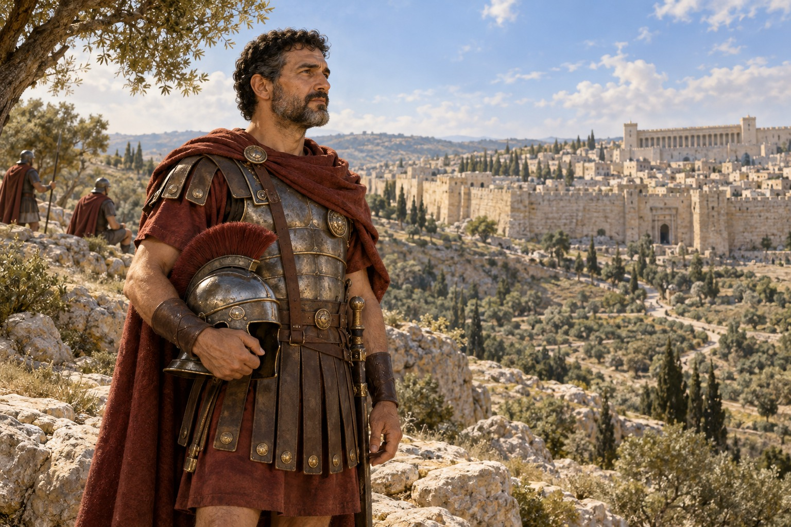

A family read-aloud for ages 6-12. Look closely at a soldier's words, and keep Scripture and tradition clear.
This English master is a private production preview. Narration, art and all-locale release gates remain open.
Story Summary
Outside Jerusalem in the first century, an unnamed Roman officer speaks about Jesus at the cross. Christian tradition remembers Longinus. Nine illustrated story pages lead to a family reflection, while keeping the Gospel accounts and tradition distinct.
Continue from Page 2?
Reading…0:00

Page 1 of 10
A soldier near Jerusalem
In the first century, outside Jerusalem, a Roman officer stood near the cross of Jesus. He was a centurion, a leader of soldiers. The Gospel of Mark does not tell us his name. Christian tradition remembers a soldier at the cross as Saint Longinus. Some traditions link him with this officer.
Much of his life is unknown to us. But the Gospels preserve something extraordinary from that day: an officer watched Jesus die, and spoke about who Jesus was. His words have traveled far beyond that hillside.
Evidence for This Page
AI-generated read-aloud narration. Illustrations are original composite scenes, not historical footage.
Read the Bible and pray together
With a parent or another trusted adult, read Mark 15:33-39 and John 19:31-37. Notice what each Gospel says and what it does not name. The final page offers an open question, a safe act of attention and a prayer.
About this story
The Gospel of Mark does not name the centurion. The Gospel of John does not name the soldier with the spear. The name Longinus and their identification with him belong to Christian tradition. This book does not invent his childhood, later journeys or private thoughts. Gospel events are original paraphrase, not a new Bible translation.
Illustrations are imaginative composites, not eyewitness reconstructions. The two men on page six illustrate separate Gospel accounts and must not be read as proof that they were the same person. Pages eight and ten show contemporary Christian life.